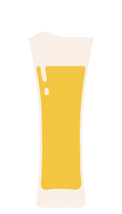

Your're the
ALEbi
of this crime!

Yes, you read it right. You're like a chamelion, you can have a sort of 101 different colours and flavours, as an ALE BEER.
There are many strains of ale yeast that add all sorts of flavours, from fruity to earthy, so there’s a huge variety of options to explore from.
Nah... It doesn't sound like me.